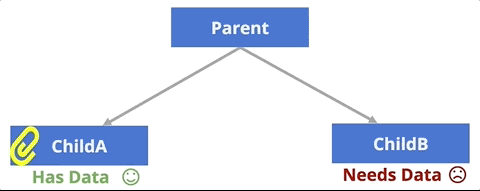

Chapter 16 React Interattivo
Questo capitolo discute come i website costruiti usando la library React possano essere resi interattivi, con Components che renderizzano contenuti diversi in risposta alle azioni degli user. In particolare, spiega come gestire in modo idiomatico gli events, memorizzare informazioni dinamiche nello state di un Component usando gli hooks, e svolgere alcune interazioni comuni specifiche (come usare forms e scaricare data).
16.1 Gestire gli Eventi in React
Puoi gestire l’interazione con lo user in React nello stesso modo in cui lo faresti usando il DOM o jQuery: registri un event listener e specifichi una callback function da eseguire quando quell’evento si verifica.
In React, registri gli event listeners specificando un attribute specifico di React su un elemento. L’attribute di solito e’ nominato con la parola on seguita dal nome dell’event a cui vuoi rispondere in formato camelCase. Per esempio, onClick registra un listener per gli eventi click, onMouseOver per gli eventi mouseover, e cosi’ via. Puoi vedere la lista completa degli attributes di event handling supportati nella documentazione per gli synthetic events. L’attribute dovrebbe ricevere un value che e’ un riferimento a una callback function (specificata come inline expression).
//Un component che rappresenta un button che logga un messaggio quando viene cliccato
function MyButton() {
//Una function da chiamare quando si clicca. Il nome e' convenzionale, ma arbitrario.
//La callback ricevera' l'event del DOM (proprio come con le DOM callbacks)
const handleClick = function(event) {
console.log("clic clic");
}
//crea un button con un attribute `onClick`!
//questo "registra" il listener e imposta la callback
return <button onClick={handleClick}>Cliccami!</button>;
}Questo component renderizza un <button> nel DOM con un event click registrato. Cliccare quel DOM element fara’ eseguire la function handleClick.
Per leggibilita’, l’esempio sopra specifica la callback function come una function separata (definita dentro il component—quindi si’, una function creata dentro una function)! Nota che e’ piu’ comune definire callbacks annidate usando arrow functions:
const handleClick = (event) => {
console.log('clic clic');
}Puoi anche specificare una callback function inline nel JSX, anche se questo puo’ diventare rapidamente disordinato e difficile da leggere con event handling complesso, quindi non e’ consigliato.
function MyButton() {
return <button onClick={(evt) => console.log("clic clic")}/>
}In modo importante, puoi registrare eventi solo su React elements (elementi HTML come <button>, che hanno nomi in minuscolo), non sui Components. Se provassi a specificare un <MyButton onClick={callback}>, staresti passando una prop che si chiama onClick, ma che altrimenti non ha alcun significato speciale!
Anche se funzionalmente simili, gli attributes di event handling React NON sono gli stessi degli event handlers HTML—onClick di React e’ diverso da onclick in HTML. Gli attributes di React sono specializzati per funzionare nel sistema di eventi di React. Alla fine, sono simili a una scorciatoia sintattica basata su JSX per usare addEventListener(), quindi non stiamo davvero mescolando piu’ responsabilita’!
16.2 State e Hooks
La sezione precedente descrive come rispondere agli eventi generati dallo user, ma affinche’ la pagina sia interattiva devi poter manipolare il contenuto renderizzato quando quell’evento si verifica. Per esempio, potresti cliccare un button e mostrare quante volte e’ stato premuto, selezionare una colonna di una tabella per ordinare i data in base a quella feature, o selezionare un component per mostrare una “pagina” di contenuto completamente diversa (vedi Chapter 19).
Per ottenere questi effetti, un component dovra’ tenere traccia del suo state o situazione—il numero nel contatore, come la tabella e’ ordinata, o quale “pagina” viene mostrata. In React, lo state di un component rappresenta informazioni interne e dinamiche su come quel Component deve essere renderizzato. Lo state contiene data che cambiano nel tempo (e solo tali informazioni—se il value non cambiera’ per quella instance di component, non dovrebbe far parte dello state!). Inoltre, ogni volta che lo state cambia, un component React fara’ automaticamente un “rerender”—il component verra’ “rieseguito” e i nuovi elementi DOM aggiornati restituiti verranno mostrati sullo schermo (sostituendo la versione renderizzata in precedenza). In breve: cambiare lo state “aggiorna” il component!
Lo state puo’ essere specificato per un function component usando uno state hook. Gli Hooks sono functions fornite da React che ti permettono di “agganciarti” ai processi di rendering e visualizzazione del framework. Lo state hook in particolare ti permette di agganciarti allo state di un component, specificando quali values devono essere “tracciati” e devono causare il rerender del component.
Gli hooks sono stati introdotti con React v16.8 (October 2018), e quindi sono il modo “nuovo” attuale di gestire lo state. Per dettagli su tecniche piu’ vecchie (che richiedono l’uso di class components), vedi State in Class Components.
Curiosita’: gli hooks sono fondamentalmente un esempio di mixins, che sono una tecnica object-oriented per includere/iniettare data o behavior in una class senza dover ereditare quel behavior da una parent class.
Lo state hook e’ una function fornita da React chiamata useState(). Questa function deve essere importata dalla library React (nota che e’ una named export quindi va importata come tale):
//importa la function dello state hook
import React, { useState } from 'react';La function useState() viene poi chiamata all’interno della component function (di solito all’inizio della function cosi’ che le variables risultanti siano disponibili da usare):
function CountingButton() {
//Definisci una state variable `count`, inizialmente 0
const [count, setCount] = useState(0);
//una callback di event handling
const handleClick = (event) => {
setCount(count+1); //aggiorna lo state con un nuovo value
}
return (
{ /* un button con l'event handler che mostra la state variable */ }
<button onClick={handleClick}>Mi hai cliccato {count} volte</button>
);
}Chiamare la function useState() crea una “state variable”—un value che verra’ tracciato e salvato tra le chiamate di render/rerender del component. Puoi pensare a una state variable come a una “instance variable” per la function (e infatti, lo state e’ memorizzato in instance variables di object).
La function
useState()riceve il value iniziale per la state variable. Nell’esempio sopra, la state variablecountsara’ inizializzata a0.La function
useState()restituisce un array di due values: il primo e’ il value corrente dello state (per esempio, con cui e’ stato inizializzato), e il secondo e’ una function usata per modificare quella particolare state variable (un “setter” o mutator). Per convenzione, usi l’array destructuring per assegnare questi due values a due variables separate in una singola operazione. Quindi la riga sopra che chiamauseState()puo’ essere letta come una scorciatoia per:const hookArray = useState(0); //la function restituisce un array di 2 values const count = hookArray[0]; //assegna il 1o elem (un value) a `count` const setCount = hookArray[1]; //assegna il 2o elem (una function) a `setCount`In modo importante, non c’e’ nulla di magico nei nomi delle variables a cui viene assegnato il risultato di
useState(). Avrebbe potuto essere scritto anche cosi’:const [countVariable, functionToUpdateCount] = useState(0)Poiche’ la function e’ un “setter” di solito viene chiamata cosi’ (
setVARIABLE), ma non e’ obbligatorio. E’ solo una function; puoi chiamarla come vuoi.
Poiche’ il value corrente dello state e’ assegnato a una variable normale (per esempio, count nell’esempio sopra), puoi usarlo ovunque useresti una variable—come in una inline expression per mostrare il value. Nota che se il value non viene effettivamente usato nel DOM renderizzato in alcun modo (direttamente o indirettamente), probabilmente non dovrebbe far parte dello state!
Aggiornare lo State
Non e’ possibile cambiare direttamente il value di una state variable (per esempio, non puoi fare count = count +1)—ecco perche’ la variable e’ dichiarata come const! Invece, devi usare la function “set state” che e’ stata creata (per esempio, setCount() nell’esempio sopra). Questa function prende come argomento il nuovo value da assegnare alla state variable (sovrascrivendo il value precedente).
Quando la set state function viene chiamata, non solo cambiera’ il value della state variable, ma fara’ anche il “rerender” del component—causera’ la chiamata di nuovo della component function, restituendo un nuovo set di elementi DOM da mostrare sullo schermo. Questi elementi DOM sostituiranno la versione renderizzata in precedenza del component; React unisce questi cambiamenti nel DOM della pagina in modo altamente efficiente, cambiando solo gli elementi che sono effettivamente aggiornati—questo e’ cio’ che rende React cosi’ efficace per sistemi su larga scala.
- Questa e’ una delle parti piu’ insidiose da ricordare in React: quando chiami una set state function, essa fara’ “ri-eseguire” la tua component function—il che significa che qualsiasi logica verra’ eseguita una seconda volta (anche se ora il value “corrente” della state variable sara’ aggiornato, invece del value iniziale passato a
useState).
Never chiamare una set state function direttamente dall’interno della tua component function; solo nelle callbacks (come per l’event handling). Chiamare setCount() direttamente causerebbe un loop ricorsivo infinito. Le component functions devono rimanere “pure” senza side effects.
Inoltre, le set state functions sono asynchronous. Chiamare la function invia solo una “request” per aggiornare lo state; non avviene immediatamente. Questo perche’ React “batcha” piu’ request per aggiornare lo state dei components (e quindi per rerenderizzarli) insieme—in questo modo se la tua app deve fare molti piccoli cambiamenti nello stesso momento, React ha bisogno di rigenerare il DOM solo una volta, fornendo un notevole boost di performance.
//Un Component con una callback che non gestisce i cambiamenti di state asincroni
function CounterWithError(props) {
const [count, setCount] = useState(3) //value iniziale di 3
const handleClick = (event) => {
setCount(4); //cambia `count` a 4
console.log(count); //stampera' "3"; lo state non e' ancora cambiato!
}
}In questo esempio, poiche’ setCount() e’ asynchronous, non puoi accedere immediatamente alla state variable aggiornata dopo aver chiamato la function. Invece devi aspettare che il component faccia “rerender”—quando il DOM del component viene rigenerato, usera’ il value aggiornato. Se vuoi vedere quel value, loggalo subito prima di restituire il DOM (non dentro l’event handler del click).
E’ possibile avere multiple state variables, ciascuna dichiarata con una chiamata diversa a useState():
//Esempio dalla documentazione React
function ExampleWithManyStates() {
//Dichiara multiple state variables!
const [age, setAge] = useState(42);
const [fruit, setFruit] = useState('banana');
const [todos, setTodos] = useState([{ text: 'Impara Hooks' }]);
}Anche se e’ possibile che una singola state variable contenga values complessi (objects e arrays, come nella variable todos sopra), spesso e’ piu’ pulito usare state variables diverse—in questo modo React deve cambiare la minima quantita’ di data possibile quando vuoi aggiornare una variable.
In modo importante, devi passare un nuovo value alla set state function affinche’ aggiorni davvero lo state e rerenderizzi il component. Cambiare solo un value dentro un object esistente non funziona:
function TodoListWithError() {
//un value di state che e' un array di objects
const [todos, setTodos] = useState([{ text: 'Impara Hooks' }]);
const handleClick = (event) => {
todos[0].text = "Correggi bug"; //modifica l'object ma non ne crea uno nuovo
setTodos(todos) //Questo non funzionera'!
}
}Nell’esempio sopra, cambiare una property dell’array-di-objects todos non cambia davvero il value. Quindi quando chiami setTodos(todos), React pensa che nulla sia cambiato (non fa una deep inspection dell’object) e quindi non aggiorna nulla. Invece, dovrai creare una nuova copia dell’array o dell’object, e poi passare quel nuovo value alla set state function:
function TodoList() {
//un value di state che e' un array di objects
const [todos, setTodos] = useState([{ text: 'Impara Hooks' }]);
const handleClick = (event) => {
//crea una copia dell'array usando la function `map()`
const todosCopy = todos.map((todoObject, index) => {
if(index == 0) { //trasforma gli objects se necessario
todoObject.text = "Correggi bug"
}
return todoObject; //restituisce l'object da mettere nel nuovo array
})
setTodos(todosCopy) //Questo funziona!
}
}Questo perche’ React vuole incoraggiare i data a rimanere immutable (non li cambi, fai solo una copia alterata) e le functions a evitare side effects (dove cambiano qualcosa fuori da se stesse) per aiutare a mantenere la consistenza dei tuoi data.
La function
.map()e’ di solito il modo piu’ semplice per copiare un array, anche se esistono altre tecniche. Se vuoi copiare un object, puoi farlo facilmente usando lo spread operator per creare un nuovo object usando le properties del primo://un object originale const original = {a: 1, b: 2}; //Crea una copia, prendendo le properties di `original` e assegnandole a //un object nuovo const copy = { ...original } //usando lo spread operator console.log(copy) //{a: 1, b: 2} console.log(copy == original) //false, different objects(La function
Object.assign()viene usata anche per fare un’operazione simile, ma lo spread operator e’ piu’ semplice da leggere)
State vs. Props
In modo importante, lo state di un Component e’ diverso dalle sue props. Anche se state e props possono sembrare simili, hanno ruoli molto diversi. Molti developer li confondono—al punto che React ha una voce FAQ sulla differenza!
La differenza chiave tra props e state e’:
propssono per informazioni che non cambiano dalla prospettiva del Component, includendo data “iniziali”.statee’ per informazioni che cambieranno, di solito a causa dell’interazione dello user.
Le props sono gli “input” di un component, i values che qualcun altro dice al Component di avere. Ecco perche’ vengono passate come argomenti! Le props sono immutabili—dalla prospettiva del component; non possono essere cambiate una volta impostate (anche se un parent potrebbe creare una versione diversa del component con props diverse).
Lo state e’ “interno” al Component, ed e’ (solo) per values che cambiano nel tempo. Se il value non cambia durante la vita del Component (per esempio, in risposta a un user event), non dovrebbe far parte dello state! Per citare dalla documentazione:
Lo state e’ riservato solo all’interattivita’, cioe’ ai data che cambiano nel tempo.
Per esempio, un component SortableTable potrebbe essere usato per renderizzare una list di data. Ma dato che i data nella list arriverebbero da altrove (per esempio, l’App complessiva) e non verrebbero cambiati dalla tabella, verrebbero passati come prop. Tuttavia, l’ordine con cui quei data vengono mostrati potrebbe cambiare—quindi potresti salvare un value orderBy nello state, e poi usarlo per organizzare quali elements vengono restituiti dalla component function. I data stessi non cambiano, ma cambia il modo in cui sono renderizzati!
E’ possibile usare le props per inizializzare una state variable (dato che le props sono i “values iniziali” per il Component), anche se le props non verranno cambiate in seguito:
//Un component che rappresenta un conteggio
function Counter(props) {
const [count, setCount] = useState(props.startAt)
}
let counter = <Counter startAt={5} />In questo caso la state variable tiene traccia del conteggio, anche se la prop specifica un numero iniziale. La variable count cambiera’ in futuro, ma il value props.startAt no.
E’ importante usare lo state solo per tracciare values che cambieranno durante la vita del Component. Se non sei sicuro se un value debba far parte dello state, considera quanto segue:
- Il value e’ passato da un parent tramite props? Se si, probabilmente non e’ state.
- Il value rimane invariato nel tempo? Se si, sicuramente non e’ state.
- Puoi calcolarlo in base ad altri state o props nel tuo component? Se si, sicuramente non e’ state.
L’ultima di queste regole e’ importante. In generale, dovresti mantenere lo state il piu’ minimale possibile—cioe’ vuoi avere il minor numero possibile di data nello state. Questo aiuta a evitare la duplicazione di informazioni (che puo’ andare out of sync), oltre ad accelerare il modo in cui React “re-renderizza” i Components quando lo state cambia.
Una delle parti piu’ difficili dell’architettura di una React application e’ capire quali informazioni debbano essere memorizzate nelle props o nello state (e in quali components). Ti suggeriamo di fare pratica con esempi semplici e di pensarci attentamente mentre costruisci applications piu’ robuste.
Lifting Up State
In React, lo state di un component e’ puramente interno a quel component—ne’ l’elemento parent del component ne’ i suoi children hanno accesso a (o sono anche solo consapevoli di) quello state. Lo state rappresenta solo informazioni su quel particolare component (e quella particolare instance del component).
A volte un child component (cioe’, un component istanziato come parte del DOM restituito) ha bisogno di alcuni data che sono memorizzati nello state—per esempio, un component BlogPost potrebbe aver bisogno di un value di data che e’ memorizzato nella state variable comments di Blog. I Components possono rendere le informazioni disponibili ai loro children passando quei data come prop:
function Blog(props) {
const [posts, setPosts] = useState([...]) //initialize the state
return (
<div>
<h2>Post piu' recente</h2>
{/* passa i values dallo state come prop */}
<BlogPost postText={posts[0]} />
</div>
)
}In questo esempio, al BlogPost verrebbero passati i data del singolo “post text” come prop normale, senza sapere che i data erano effettivamente memorizzati nello state di Blog. Quando quei data cambiano (per esempio, quando viene aggiunto un nuovo post), la component function verra’ chiamata di nuovo e il component BlogPost verra’ re-istanzato con un nuovo value per la sua prop—di nuovo, senza sapere che c’e’ stato un cambiamento. Dal punto di vista di BlogPost, c’e’ sempre stato un solo value postText (il BlogPost con un testo diverso e’ in realta’ un oggetto BlogPost diverso!).
Mentre passare data di state a un child (come prop) e’ facile, comunicare data di state a un parent o a un sibling e’ piu’ complicato. Per esempio, potresti voler avere un component SearchForm in grado di cercare data, ma poi voler avere un component sibling ResultsList in grado di mostrare i risultati renderizzati:
<App>
<SearchForm /> {/* has the data */}
<ResultsList /> {/* needs the data */}
</App>Quando ti trovi di fronte a questo problema, la best practice in React e’ lift the state up al closest common ancestor. Questo significa che invece di avere i data memorizzati nello state di uno dei children, memorizzi i data nello state del parent. Il parent puo’ poi passare quelle informazioni ai children (come props) per farle usare. In questo modo i data fluiscono sempre “verso il basso” nell’albero.

Ma con lo state memorizzato nel parent, i children elements (per esempio, SearchForm) potrebbero comunque aver bisogno di un modo per interagire con quel parent e dirgli di cambiare il suo state. Per fare questo, puoi far definire al parent una function che cambia il suo state, e poi passare al child quella callback function come prop. Il child potra’ poi eseguire quella callback prop, dicendo cosi’ al parent di fare qualcosa (come aggiornare il suo state!)
- E’ come se i genitori scrivessero le istruzioni, e poi le consegnassero al child da fare piu’ tardi!
Nell’esempio seguente, il component parent (VotingApp) memorizza data di state su quante volte ogni button e’ stato premuto, passando una callback function (countClick) ai suoi child Components (CandidateButton). Il CandidateButton eseguira’ poi quella callback quando viene cliccato. Eseguire questa function fa si’ che VotingApp aggiorni il suo state e re-renderizzi i buttons, che mostrano testo aggiornato in base alle props date (cioe’: chi sta vincendo!).
function VotingApp(props) {
//inizializza i conteggi di state, uno per ogni colore
//usa un solo state value cosi' c'e' una sola function di "update"
const [counts, setCounts] = useState({red: 0, blue: 0})
//una function per aggiornare lo state
//si aspetta un "color" per quale button e' stato cliccato
const handleCount = function(color) {
console.log(color + " ha ricevuto un voto!");
const newCounts = { ...counts } //crea una copia dell'object
newCounts[color]++; //aggiorna la copia locale
setCounts(newCounts) //aggiorna lo state con la copia modificata
}
//renderizza in base allo state corrente
let winner = "pareggio";
if(counts.red > counts.blue) winner = "red"
else if(counts.blue > counts.red) winner = "blue"
return (
<div>
<p>Il vincitore corrente e': {winner}</p>
{/* Passa la callback a ogni button come prop */}
<CandidateButton color="red" winner={winner} callback={handleCount} />
<CandidateButton color="blue" winner={winner} callback={handleCount} />
</div>
);
}
function CandidateButton(props) {
const handleClick = () => {
//Al click, esegui la callback function data (passando il proprio nome)
props.callback(props.color)
}
//renderizza in base alle props correnti
let label = "Non sto vincendo";
if(props.winner === props.color)
label = "Sto vincendo!"
return (
<button className={props.color} onClick={handleClick}>
{label}
</button>
);
}Come con molti sistemi React, ci sono molte parti in movimento che si incastrano. Per capire come funziona questo esempio, prova a “tracciare” il codice che si verifica quando CountingApp viene renderizzato per la prima volta, e poi cosa succede quando un button viene cliccato. Ricorda che chiamare setCounts() fa re-renderizzare il component (la function viene rieseguita)!
Infine, nota in particolare che la class CandidateButton non sa nulla del suo parent o di come viene usata (o anche se esistono altre istanze di CandidateButton). Invece, renderizza semplicemente se stessa in base alle sue props, ed esegue qualsiasi callback function le sia stata data quando viene cliccata (senza preoccuparsi di cosa faccia quella function). Avere tanti components “semplici” come questo e’ il modo migliore per progettare React apps.
In sintesi, per realizzare una React application interattiva, esegui i seguenti passi:
- Parti da una versione “statica” (non interattiva), con i Components appropriati
- Identifica le variables che cambieranno e quindi devono essere memorizzate nello state
- Definisci le state variables nel “lowest” common ancestor dei Components che ne hanno bisogno
- Passa le informazioni di state ai child Components come
props - Passa callback functions come
propsai child Components cosi’ possono modificare lo state.
16.3 Interazioni Specifiche
Questa sezione fornisce alcuni dettagli su specifici tipi di interazioni comunemente usati nelle React apps ma che richiedono ulteriori dettagli e spiegazioni.
Lavorare con i Forms
Uno dei motivi piu’ comuni per tracciare lo state in una React app e’ quando si sviluppano forms che lo user puo’ compilare per inviare informazioni. I forms sono una struttura comune da usare per ottenere input dallo user—sia che si tratti di un “search form” per esplorare un data set, sia di un “login form” per permettere a uno user l’accesso a data personalizzati.
In HTML normale, elementi di form come <input> tengono traccia del proprio “state”. Per esempio, qualunque cosa lo user abbia digitato in un text input viene memorizzata nella property value di quell’input:
//Seleziona l'elemento <input type="text">
let textInput = document.querySelector('input[type="text"]');
//Event che si verifica ogni volta che l'input cambia
textInput.addEventListener('change', (event) => {
let input = event.target;
console.log(input.value); //accedi allo "state" di quell'elemento
});Spesso vuoi che React possa rispondere ai data inseriti dallo user in un form—sia perche’ vuoi inviare una request AJAX basata su quei data, sia perche’ vuoi effettuare la form validation e confermare che lo user abbia inserito input appropriati (per esempio, che la password sia lunga almeno 6 caratteri). Ma memorizzare l’input dello user nello state dell’elemento <input> puo’ causare problemi per React: i React components non sapranno che devono “rerenderizzare” quando cambia, e aggiornare un component React potrebbe far re-renderizzare l’intero DOM tree (producendo un nuovo elemento <input> con uno state value diverso).
Quindi la pratica raccomandata per lavorare con i forms in React e’ usare i controlled Components. In questo caso, definisci un component che traccia lo state di cio’ che lo user ha digitato nell’<input>, e poi renderizza un <input> con una property value appropriata. Invece di lasciare che l’<input> controlli il proprio state, il component React controlla lo state e poi dice all’elemento <input> quale value dovrebbe mostrare. E’ come se React prendesse i data dall’<input> e poi si prendesse il merito.
function MyInput(props) {
const [inputValue, setInputValue] = useState('')//inizializza come string vuota
//rispondi ai cambiamenti dell'input
const handleChange = (event) => {
//prendi il value che l'<input> ha ora
let newValue = event.target.value
//aggiorna lo state per usare quel nuovo value, renderizzando il component
setInputValue(newValue);
}
return (
<div>
{/* L'input verra' renderizzato con il value controllato da React */}
<input type="text" onChange={handleChange} value={inputValue} />
<p>Hai digitato: {inputValue}</p>
</div>
);
}Quello sopra e’ un esempio di controlled Component di base. Quando lo user inserisce un value diverso nell’elemento <input>, la callback handleChange() viene eseguita. Questa prende quel value aggiornato e lo salva nella state variable inputValue del component. Aggiornare quella state variable fa anche re-renderizzare il component, il che ricrea una versione completamente nuova dell’elemento <input>, ma ora con il value controllato da React per il suo attribute value. In questo modo qualunque value inserito dallo user sara’ sempre parte dello state di un React Component, e quindi puo’ essere manipolato e gestito nello stesso modo.
E naturalmente, un controlled form potrebbe renderizzare piu’ elementi
<input>, tracciando i values di ognuno in una variable separata nello state. Questo permette anche agli inputs di interagire facilmente tra loro, ad esempio se vuoi confermare che una password sia stata inserita correttamente due volte.Una robusta form validation e’ in realta’ piuttosto complessa in React (soprattutto se confrontata con altri framework come Angular). Usare una library esterna come Formik puo’ aiutare a sviluppare forms e gestire tutti gli edge cases.
Caricare Data via AJAX
Uno degli usi piu’ comuni delle lifecycle callback functions e’ quando si accede a data in modo asincrono, ad esempio quando si scaricano data tramite una request AJAX (come descritto in Chapter 14). Questa sezione fornisce dettagli su come caricare data in modo asincrono nel framework React.
Per prima cosa, ricorda che il codice React e’ transpiled usando Webpack. Di conseguenza, alcune API—incluso fetch() non sono “built-in” in React come lo sono in un browser moderno. Come discusso in Chapter 14, per supportare questi “altri” browser, dovrai caricare un polyfill. Puoi farlo con React installando la library whatwg-fetch, e poi importando quel polyfill nel tuo codice React:
# In command line, installa il polyfill
npm install whatwg-fetch//Nel tuo JavaScript, importa il polyfill (caricandolo "globalmente")
//Questo rendera' disponibile la function `fetch()`
import 'whatwg-fetch';Ricorda che fetch() scarica i data in modo asynchronous. Quindi se vuoi scaricare alcuni data da mostrare, potrebbero impiegare un po’ ad arrivare. Non vuoi che React debba “aspettare” i data (dato che React e’ progettato per essere fast). Quindi la best practice e’ inviare la request fetch() per i data e poi, then, quando i data sono stati scaricati, chiamare una set state function per aggiornare il component con i data scaricati. (Il component puo’ inizializzare il suo state come un “array vuoto” di data).
Scaricare data da internet e’ considerato un side effect in React. I function components dovrebbero fare una sola cosa (come “pure” functions ben progettate): restituiscono il DOM che verra’ renderizzato sullo schermo. Ma scaricare data modifica qualcosa al di fuori di quel framework, in quanto modifica lo stato/informazioni della rete e persino lo stato del server remoto! Quindi chiamare fetch() direttamente dentro la component function sarebbe considerato cattivo stile di programmazione, e puo’ causare problemi e bug quando il component viene renderizzato. Per esempio, se i data scaricati tornano troppo rapidamente o troppo lentamente, potresti provare a impostare la state variable di (e quindi rerenderizzare) un component che non e’ ancora agganciato al DOM, causando il crash di React. E se lo state si aggiorna e riesegue il component, questo lo farebbe scaricare i data di nuovo, potenzialmente causando un loop infinito!
Per eseguire operazioni di side effect in React, devi usare un altro tipo di hook chiamato effect hook, fornito dalla function React useEffect(). Un effect hook ti permette di agganciarti al lifecycle di un component, specificando del codice (una function) che dovrebbe essere eseguito dopo che il component ha finito di renderizzare. Qualsiasi codice che produca un side effect (come scaricare data, manipolare il DOM al di fuori del rendering di React, o impostare subscription a una data source) dovrebbe essere eseguito tramite un effect hook. Ecco perche’ si chiamano effect hooks: perche’ definiscono un side effect del rendering del component.
Un esempio di uso dell’effect hook per scaricare data e’ qui sotto, seguito da una spiegazione della sintassi.
//importa gli hooks usati
import React, { useState, useEffect } from 'react';
function MyComponent() {
//memorizza i data in una state variable, inizializzata come array vuoto
const [data, setData] = useState([]);
//specifica la function dell'effect hook
useEffect(() => {
fetch(dataUri) //invia una request AJAX
.then((res) => res.json())
.then((data) => {
let processedData = data.filter(...).map(...) //fai il processing desiderato
setData(processedData) //cambia lo state e re-renderizza
})
}, []) //un array vuoto e' il secondo argomento della function `useEffect()`.
//Dice di eseguire questo effect solo al primo render
//Mappa i data values in elementi DOM
//Nota che questo funziona anche prima che i data siano caricati (quando l'array e' vuoto!)
let dataItems = data.map((item) => {
return <li key={item.id}>{item.value}</li>; //restituisce la versione DOM del datum
})
//renderizza i data items (per esempio, come list)
return <ul>{dataItems}</ul>;
}
}Chiamare la function useEffect() specifica una callback function che verra’ eseguita dopo il rendering del component. Cose da notare su come questa function viene usata:
Come per lo state hook, la function dell’effect hook
useEffectdeve essere importata (come named import).La function
useEffect()prende come argomento la callback function da eseguire dopo il rendering del component. Di solito viene specificata come arrow function, anche se naturalmente potresti darle una function con nome. Nota che la callback non prende argomenti.Dentro la callback di
useEffect()va la normale chiamatafetch(). Nota che i data scaricati vengono poi assegnati alla state variable del component chiamando la set state function (chiamatasetData()in questo esempio).Anche se tecnicamente significa che il component renderizza due volte (una senza data, poi una con), React puo’ batchare queste request insieme cosi’ se i data si scaricano abbastanza velocemente, lo user non se ne accorgera’. Questa e’ anche una buona ragione per includere conditionalmente elementi DOM come gli spinner quando si renderizzano data.
Di default, la callback dell’effect viene eseguita dopo ogni volta che il component renderizza. Questo significa che se il component deve re-renderizzare (per esempio, perche’ una prop e’ cambiata), allora i data verrebbero scaricati una seconda volta! Per evitarlo, puoi passare alla function
useEffect()un secondo argomento opzionale. Questo argomento dovrebbe essere un array di values da cui l’effect “dipende”—l’effect verra’ rieseguito solo se una di queste variables cambia tra i render://un effect che si riesegue solo se la variable `count` cambia useEffect(() => { //... }, [count])Passando un array vuoto come secondo argomento, dici all’effect che deve rieseguire solo se una di quelle (inesistenti) variables si aggiorna—e dato che non ci sono variables elencate, non verra’ mai eseguito una seconda volta!
La function
useEffect()non deve restituire alcun value. In effetti, l’unico value che puo’ restituire e’ una callback function di “cleanup”, che React eseguira’ ogni volta che il component viene rimosso dal DOM:useEffect(() => { //... return function cleanup() { //il nome della function e' arbitrario console.log("il component e' stato rimosso!") } })Questo e’ necessario solo per side effects che richiedono cleanup, come fare subscription a una data source o gestire alcuni behavior di autenticazione dello user. Non e’ necessario per le chiamate
fetch()di base.
Ci sono anche altri hooks disponibili in React. Dai un’occhiata alla documentazione per i dettagli. Nota che in generale dovresti considerare un hook solo se stai incontrando un problema architetturale (per esempio, hai molto codice ripetuto)—altrimenti resta con la struttura base di props e state!